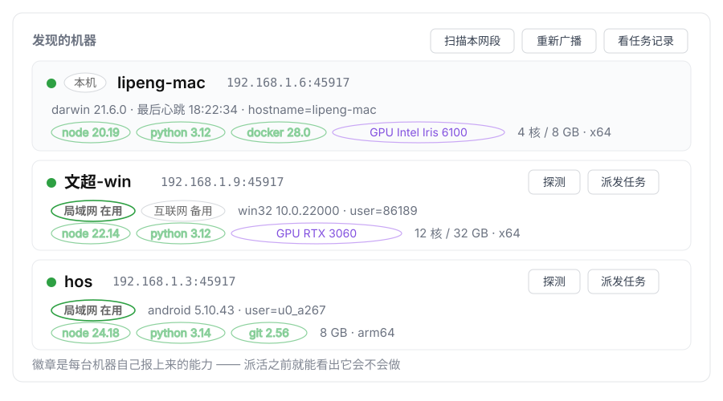
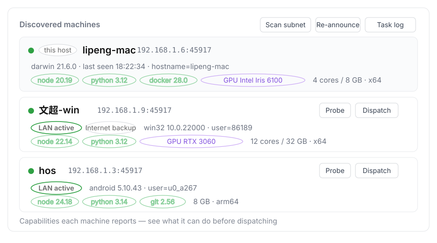

合上笔记本，活还在跑。
两台电脑上的 agent 各装一次，自己找到彼此 —— 不用配对码、不用填 IP、不用装 Tailscale 客户端。你说一句要什么结果，任务交给另一台的 agent；它做完，结果派回来。
没有第二台电脑也能看：演示不连接任何机器，也不花 token。
Close the lid. The work keeps running.
The agents on both machines find each other — no pairing codes, no IP addresses, no Tailscale client. Say what result you need; the task goes to the other agent, which does it and sends the result back.
No second machine? The demo runs on this page — nothing is connected, no tokens are spent.
不是"远程执行"，是 agent 之间互相派活：你说要什么结果，对端的 agent 自己决定怎么做。
「拉最新代码，编译 Windows 版，产物和报错都发我」
它做拉代码、跑构建、收集产物与错误
你收到产物路径、退出码、报错摘要
「把刚编的包装到 Android 上，启动一下，截图和日志发我」
它做安装、启动、截图、抓日志
你收到截图、关键日志、启动是否成功
「在 Windows 那台点『检查更新』装到最新版，重启，确认 health 里的版本是新的」
它做升级、重启、请求 health
你收到版本号、是否真的生效
链式也可以：A 派给 B 编译，B 做完再交给 C 部署验证，最后结果回到 A。
Not remote execution — agents handing work to each other. You say the result you need; the other agent decides how.
“Pull the latest code, build the Windows target, send me the artifact and any errors.”
It doespull, build, collect the artifact and errors
You getartifact path, exit code, error summary
“Install the build I just made on the Android device, launch it, send a screenshot and logs.”
It doesinstall, launch, screenshot, grab logs
You getscreenshot, key logs, whether it launched
“On the Windows box, install the latest build, restart, and confirm health reports the new version.”
It doesupgrade, restart, request health
You getversion, whether it really took effect
Chains work too: A sends to B to compile, B hands it to C to deploy, and the result comes back to A.
以前：两台机器各干各的，你在中间搬上下文、复述需求、复制结果。现在：一句话派过去，对端的 agent 自己开跑，结果由它派回来。
Before: two machines working separately, with you moving context back and forth. Now: one sentence, the peer’s agent runs it, and the result comes back on its own.
dsh plugin add dsh-plugin-meshdesktop profile 要在 DSH 自带终端里跑；其它 profile 用普通终端即可。
插件在启动时加载，装完必须重启一次。
第一次会让你给这台机器起名（默认主机名）。别的机器就靠这个名字找你。两台在同一局域网，几秒内就会互相出现。
选一台设备 →「派发任务」，或者直接在会话里以 @机器名 开头说话。派出去只是「送达」；对端跑完会把结果派回来，出现在「任务」里。第一次往陌生设备派活时，对方会先弹一次「允许」。
dsh plugin add dsh-plugin-meshThe desktop profile needs DSH's own terminal; other profiles work from a normal one.
Plugins load at startup, so restart once.
First run asks for a name (hostname by default). Peers find you by that name. On the same LAN they show up within seconds.
Pick a device → “Dispatch”, or start a chat message with @machine. Sending only means “delivered”; the peer dispatches the result back into “Tasks” when it is done. The first task to an unknown machine asks that side for approval.


45917 和 UDP 45892？ 还不出现就点「局域网探测」—— 只要端口通，扫描就能发现，不依赖组播。45917 and UDP 45892? Still nothing: use “Scan subnet” — if the port is reachable, the scan finds it without multicast.